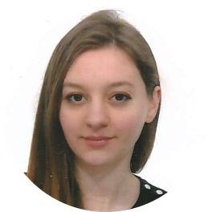

|  |
Sara Osmani |
Laureata in Ingegneria elettronica e informatica pronta a mettere in pratica e accrescere, con attitudine positiva, le proprie competenze e passioni in informatica ed elettronica.
2020-presente
Laurea magistrale Ingegneria elettronica per l'ICT
Università degli studi di Ferrara.
Competenze acquisite: cenni di linguaggi di programmazione del PLC
(Ladder, SFC ed ST per la soluzione di problemi di controllo logico),
propagazione, business dell'impresa.
2016-2020
Laurea triennale in Ingegneria elettronica e informatica
Università degli studi di Ferrara.
Competenze acquisite: Pascal, C, C++, cenni di Java, VHDL, cenni di
Assembly (ARM), MATLAB, LabVIEW, azionamenti elettrici, conoscenza di circuiti e
componenti elettronici. Esperienza con la strumentazione di laboratorio
(oscilloscopio, analizzatore di spettro, multimetro digitale, generatore di
funzioni, alimentatore), SPICE, Advanced Design System.
Tesi di Laurea: Progetto al CAD e realizzazione di un accoppiatore
bidirezionale di potenza con trasformatore.
Voto di Laurea: 92/110
2011-2016
Liceo Ginnasio Statale G.B. Brocchi.
Diploma liceo scientifico opzione scienze applicate. Durante questi anni di
liceo ho fatto molte attività extra scolastiche tra cui:
| Anno | Lavoro | |
|---|---|---|
| 2016-presente | Ripetizioni e aiuto compiti | Durante il periodo universitario ho dato ripetizioni private. Questo mi ha permesso di sviluppare ed ampliare le mie capacità comunicative e di entrare in empatia con il prossimo. |
| 2015 | Stage estivo all'università di Venezia | Ho svolto una settimana di stage nel laboratorio del dipartimento di scienze molecolari e nano sistemi, aiutando una dottoranda di chimica ad analizzare un nuovo prodotto fatto in laboratorio: il SOLKETAL |
| 2015 | Stage estivo all'ospedale S. Bassiano | Ho svolto una settimana di stage all'ospedale di Bassano, nel reparto ambulatorio cardiologico, osservando il lavoro svolto da medici e infermieri |
| Data di nascita: | 13/10/1997 |
| Luogo di nascita: | Bassano del Grappa |
| Nazionalità: | Italiana |
| LINGUE | CONOSCENZE | AUTOMUNITA | |
| Albanese | Madrelingua | utilizzo del pacchetto Microsoft office | Patente B |
| Inglese | Scolastico | conoscenze di sistemi operativi:Windows, Linux, MacOS | |